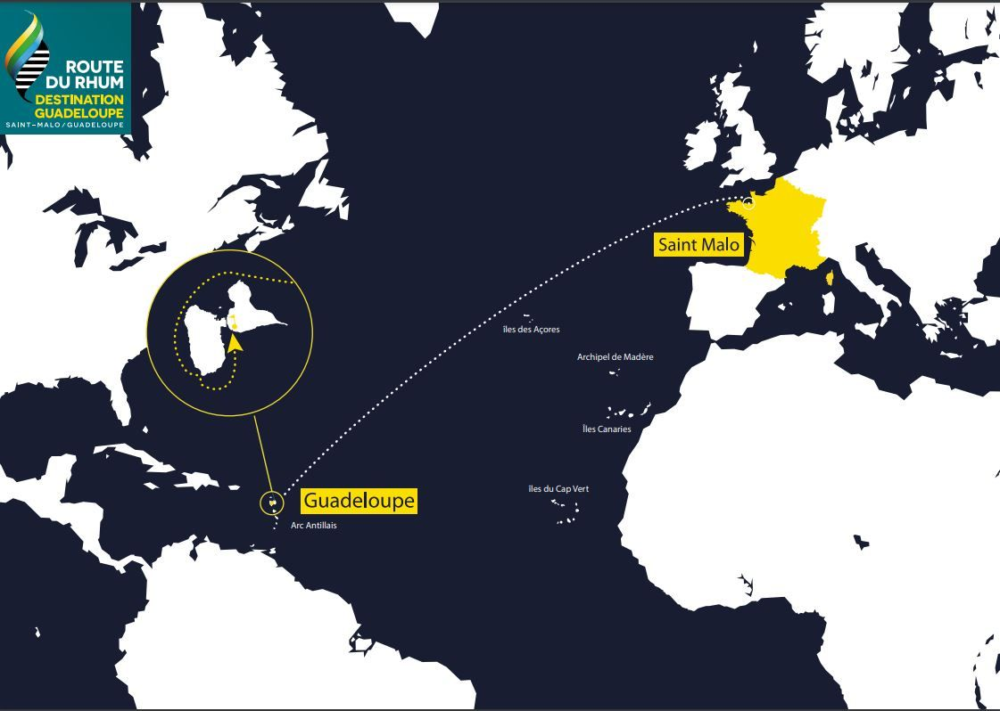
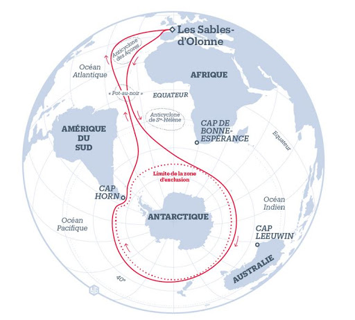
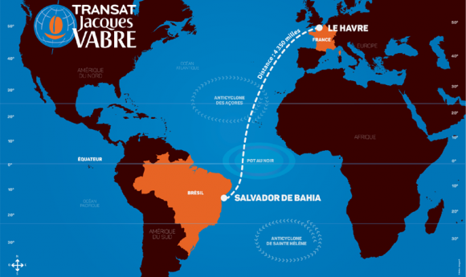

Histoire de la course au large
Les origines
La course au large est née au XIXe siècle lorsque la navigation était essentielle. Les grandes traversées et régates sont d’abord des défis entre marins et aventuriers.
Jusqu’aux années 1960, la discipline est peu médiatisée. Éric Tabarly révolutionne la course au large avec ses bateaux Pen Duick et gagne la Transat anglaise en 1964.
Le développement des grandes courses
À partir de 1970, les grandes épreuves se multiplient : Route du Rhum, Vendée Globe… Les bateaux deviennent plus légers, plus rapides et spécialisés.
Depuis les années 2000, la technologie transforme la discipline avec l’arrivée des foils et de l’électronique embarquée.
Les grandes courses au large
Transat Anglaise – 1960 – solitaire
Route du Rhum – 1978 – solitaire
Vendée Globe – 1989 – solitaire
Transat Café L'Or – 1993 – double
Trophée Jules Verne – 1993 – équipage


